Sculpt Mode - Sculpt Menu
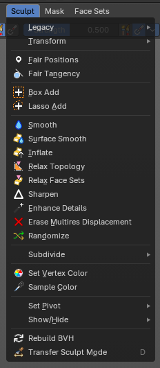
This group of operators contain act-once operators to assist in every day sculpting workflows.
Legacy submenu
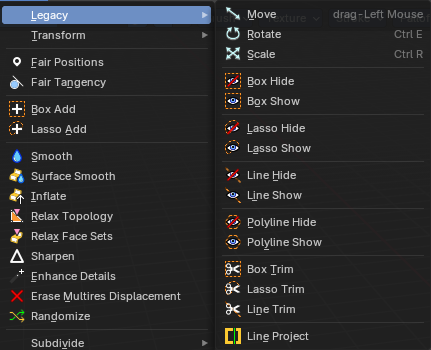
The legacy menu contains operators from the old act-once tool system that already exists in the tool shelf that use the new mode based tool system.
Move
Activates the old move tool. The old move tool does not show a widget!
Note that the hotkey for this tool is not displayed correctly. But can't be fixed by us. The hotkey is ctrl W
| Entry | What it does |
|---|---|
| Snapping | Holding down Ctrl activates temporary global snapping. |
| Precision movement | When you hold down shift, then you will have a much slower but also much preciser movement. |
Header Values
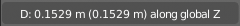
When you move your object then you will see some values in the header, which defines the current position of the object.
The value m stands for the default metric system. Meters. You can change the units in the Properties editor in the Scene properties in the Units panel. When you choose kilometers here then you will see a km instead m.
The value D stands for the distance of the current selected axis. This can also be two axis. Then you have two d values. The value in the brackets is then the direct distance to the starting point.
These values are always relative to the starting point. You always start with zero, regardless of the real world position.
Numerical Input
When you move the object, and hold down the mouse and type in a value, like 20, then the movement will be performed by the value that you have typed in. In this case by 20 units in direction of the selected axis.
Limit Axis
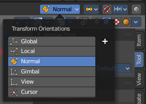
When you want to rotate a specific axis, then press X or Y or Z to limit the rotation to this axis. You usually start in global orientation. But you can change this in the Orientation settings.
By holding down the mouse button and pressing the X, Y or Z key twice you can toggle this to local. But also to other orientations. This depends in what orientation you start. With normal you can toggle that way between Normal and global.
This can be combined with the numerical input. Type in X, type in X again to use the local space, type in 20 to move by 20 units in local orientation. Release the mouse to confirm.
Orientation
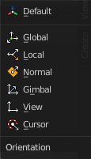
The widget can have different orientations. The menu items should be self explaining.
Last Operator Move
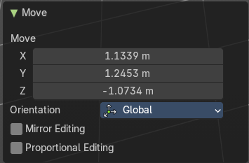
Move X, Y Z
The position. Attention, the actual world orientation and rotation does not matter here. It always starts with a value of zero, and moves relative to this zero then. For the actual location values have a look in the sidebar in the transform panel.
Orientation
The widget can have different orientations. The menu items should be self explaining.
Proportional editing
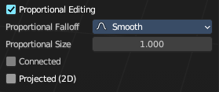
Enables proportional editing. Activating proportional editing reveals further settings.
| Entry | What it does |
|---|---|
| Proportional Falloff | Adjust the falloff methods. |
| Proportional Size | See and adjust the falloff radius. |
| Connected | The proportional falloff gets calculated for connected parts only. |
| Projected(2D) | The proportional falloff gets calculated in the screen space. Depth doesn't play a role. When it's in the radius, then it gets calculated. |
Rotate
Activates the old Rotate tool. This tool has no widget!
Snapping
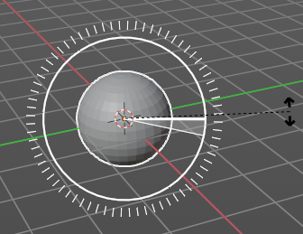
Holding down Ctrl activates temporary global snapping. It snaps then by 5 degrees steps.
When you use the white circle to rotate, then the widget also shows a division circle around the widget. This divisions shows even finer when you do precision rotation.
Precision rotation
When you hold down shift, then you will have a much slower but also much preciser rotation.
Header Values
When you rotate your object then you will see some values in the header, which defines the current rotation of the object. The rotation is shown in degrees.
Numerical Input
When you rotate the object, and hold down the mouse and type in a value, like 20, then the rotation will be performed by the value that you have typed in. In this case by 20 degree around the selected axis.
Limit Axis
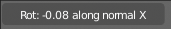
When you want to rotate a specific axis, then press X or Y or Z to limit the rotation to this axis. You usually start in global orientation. But you can change this in the Orientation settings.
By holding down the mouse button and pressing the X, Y or Z key twice you can toggle this to local. But also to other orientations. This depends in what orientation you start. With normal you can toggle that way between Normal and Global.
This can be combined with the numerical input. Type in X, type in X again to use the local space, type in 20 to rotate by 20 degree. Release the mouse to confirm.
Last Operator Rotate
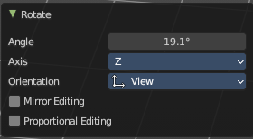
| Entry | What it does |
|---|---|
| Angle | The rotation. Attention, the actual world orientation and rotation does not matter here. It always starts with a value of zero, and rotates relative to this zero then. For the actual rotation values have a look in the sidebar in the transform panel. |
| Axis | Which axis to rotate. |
Orientation
The widget can have different orientations. The menu items should be self explaining.
Mirror Editing
Enable mirror editing.
Proportional editing
Enables proportional editing. Activating proportional editing reveals further settings.
| Entry | What it does |
|---|---|
| Proportional Falloff | Adjust the falloff methods. |
| Proportional Size | See and adjust the falloff radius. |
| Connected | The proportional falloff gets calculated for connected parts only. |
| Projected(2D) | The proportional falloff gets calculated in the screen space. Depth doesn't play a role. When it's in the radius, then it gets calculated. |
Scale
Activates the old Scale tool. This tool has no widget!
| Entry | What it does |
|---|---|
| Snapping | Holding down Ctrl activates temporary global snapping. |
| Precision Scale | When you hold down shift, then you will have a much slower but also much preciser scale. |
Header Values
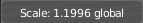
When you scale your object then you will see some values in the header, which defines the current scale of the object.
These values are always relative to the starting point. You always start with 1, regardless of the real world scale.
Numerical Input
When you scale the object, and hold down the mouse and type in a value, like 20, then the scale will be performed by the value that you have typed in. In this case by factor 20 along the selected axis.
Limit Axis
When you want to rotate a specific axis, then press X or Y or Z to limit the scale to this axis. You usually start in global orientation. But you can change this in the Orientation settings.
By holding down the mouse button and pressing the X, Y or Z key twice you can toggle this to local. But also to other orientations. This depends in what orientation you start. With normal you can toggle that way between Normal and Global.
This can be combined with the numerical input. Hold down mouse, type in X, type in X again to use the local space, type in 20 to scale by 20 units. Release the mouse to confirm.
Last Operator Resize
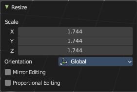
| Entry | What it does |
|---|---|
| Angle | The rotation. Attention, the actual world orientation and rotation does not matter here. It always starts with a value of zero, and rotates relative to this zero then. For the actual rotation values have a look in the sidebar in the transform panel. |
| Axis | Which axis to rotate. |
Orientation
The widget can have different orientations. The menu items should be self explaining.
Mirror Editing
Enable mirror editing.
Proportional editing
Enables proportional editing. Activating proportional editing reveals further settings
| Entry | What it does |
|---|---|
| Proportional Falloff | Adjust the falloff methods. |
| Proportional Size | See and adjust the falloff radius. |
| Connected | The proportional falloff gets calculated for connected parts only. |
| Projected(2D) | The proportional falloff gets calculated in the screen space. Depth doesn't play a role. When it's in the radius, then it gets calculated. |
Box Hide
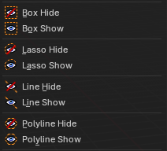
Calls a rectangle tool that allows you to hide away mesh parts.
| Entry | What it does |
|---|---|
| Box Show | Calls a rectangle tool that allows you to reveal hidden mesh parts. |
| Lasso Hide | Calls a lasso tool that allows you to hide away mesh parts. |
| Lasso Show | Calls a lasso tool that allows you to reveal hidden mesh parts. |
| Line Hide | Calls a line tool which hides the vertices at the one side away. |
| Line Show | Calls a line tool that allows you to reveal hidden mesh parts. |
Polyline Hide
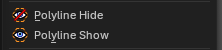
Calls a poly line tool which hides the vertices at the one side away after you draw and confirm the polyline shape.
Polyline Show
Calls a poly line tool that allows you to reveal hidden mesh parts after you draw and confirm the polyline shape.
Box Trim
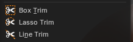
Calls a rectangle tool that cuts away mesh parts, dependent of the view.
| Entry | What it does |
|---|---|
| Lasso Trim | Calls a rectangle tool that cuts away mesh parts, dependent of the view. |
| Line Trim | Calls a line tool that cuts away mesh parts based on ab underside of a line that you can draw from the first click to a second click. The line will show a gradient, any part of the mesh on that side of the gradient will be booleaned. |
| Line Project | Calls a rectangle tool that cuts away mesh parts, dependant of the view. |
Transform submenu
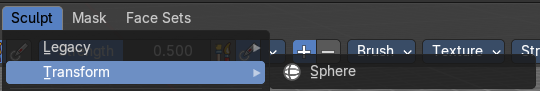
Sphere
Adds a mesh filter that casts the mesh to a sphere shape.
Activate the tool, click at the mesh, and adjust the sphere shape in the last operator panel.
Last operator Filter Mesh
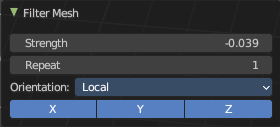
| Entry | What it does |
|---|---|
| Strength | The strength of the sphere casting |
| Repeat | How often to repeat the casting. |
Orientation
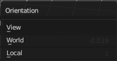
The orientation of the tool.
Axis
Which axis to affect.
Fair Positions
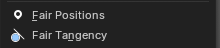
Edits the current active face set.
Creates a smooth as possible geometry patch from the face set, miniming changes in vertex positions.
Fair Tangency
Edits the current active face set.
Creates a smooth as possible geometry patch from the face set, miniming changes in vertex tangents.
Last Operator Edit Face Sets
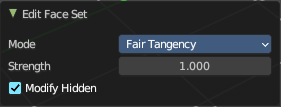
Mode
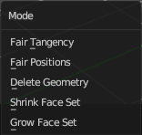
The face set modification mode.
| Entry | What it does |
|---|---|
| Strength | How strong the operation should be applied. |
| Modify Hidden | Also modify hidden geometry. |
Box Add
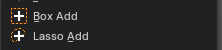
Calls a rectangle tool that adds mesh parts, dependant of the view.
Lasso Add
Calls a rectangle tool that adds mesh parts, dependant of the view.
Smooth
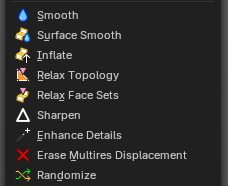
An act-once operator that smoothens the object.
| Entry | What it does |
|---|---|
| Surface Smooth | An act-once operator that smoothens the surface while preserving volume. |
| Inflate | An act-once operator that inflates the surface volume. |
| Relax Topology | An act-once operator that relaxes the topology of the mesh. |
| Relax Face Sets | An act-once operator that relaxes the face sets and smooths them out. |
| Sharpen | An act-once operator that sharpens the face sets. |
| Enhance Details | An act-once operator that enhances the details of the mesh. |
| Erase Multires Displacement | An act-once operator that erases multiresolution displacement. |
Randomize
An act-once operator that randomizes the mesh topology.
Last operator Filter Mesh
| Entry | What it does |
|---|---|
| Strength | The strength of the sphere casting |
| Repeat | How often to repeat the casting. |
Orientation
The orientation of the tool.
Axis
Which axis to affect.
Subdivide submenu
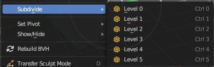
Subdivide is a menu where you can quickly set the subdivision level of the selection. What it does is to add a SDS modifier in the Properties Editor if required. And set the SDS level to the needed value. Crtrl 0 sets SDS to level 0. Ctrl 1 sets SDS level to 1 , and so on.
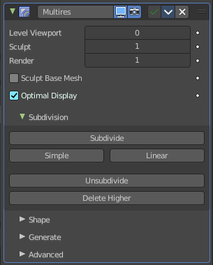
SDS happens at Object mode level. Even when you apply it in the Sculpt Mode! And it happens at the whole object. The sculpting though still happens at the base mesh.
Last Operator Subdivision Set
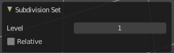
Level
Adjust the SDS level.
Relative
Applies the Subsurf Level as an offset relative to the current level.
Sample Color
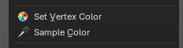
Samples the vertex color attribute of the active vertex.
Set Vertex Color
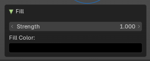
Flood fills the vertex colors with the current vertex color value. Applies a vertex color to the selected or affected geometry during sculpting. Useful for painting, shading, or marking areas directly on the mesh without switching to Vertex Paint mode.
Last operator Fill
| Entry | What it does |
|---|---|
| Strength | Controls the intensity of the color application. |
| Fill Color | Defines the color applied to vertices. |
Set Pivot
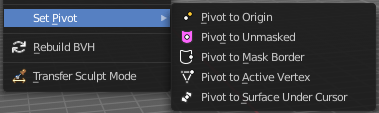
Sets the pivot to the chosen location. The menu items should be self explaining. So we don't repeat them here.
Last operator Set Pivot Position
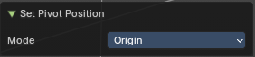
Mode
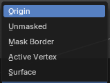
How to set the pivot to.
Show / Hide submenu
Toggle Visibility
Toggles the visibility of face sets.
Last operator Face Sets Visibility
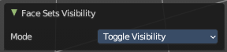
Mode
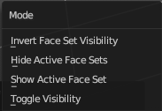
The show hide modes for face sets.
Hide active Face Sets
Makes the active face sets invisible.
Last operator Face Sets Visibility
Mode
The show hide modes for face sets.
Show All
Makes all invisible mesh parts visible again.
Invert Visible
Toggles the visibility of the selected face sets.
Last operator Face Sets Visibility
Mode
The show hide modes for face sets.
Hide Masked
Hides the masked mesh part.
Rebuild BVH
Recalculate the sculpt BVH to improve performance.
Transfer Sculpt Mode
Switch to another object in Sculpt mode. The tool calls an object picker with which you can choose the object that you want to switch to.
There is also a hardcoded hotkey D, which works directly. Hover with the mouse over the object, and press D